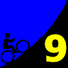
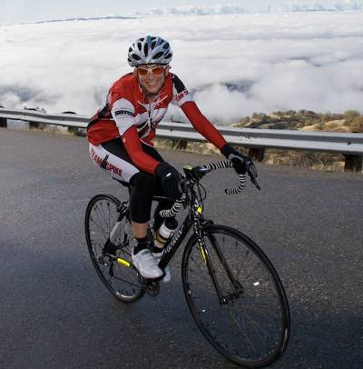

|  |
2008 Low-Key Hillclimbs Week 9 Results: Mt Hamilton 27 Nov 2008 |
|  |
| Laura Jump reaches the summit above the clouds (Josh Hadley photo) |
Despite overcast skies, an impressive Low-Key hoard of over 120 gathered on this Thanksgiving morning at the base of Mount Hamilton Road. Gazing upward, we knew we'd be climbing into these same clouds, adding to the surreality of the start of a climb. The calm before the pain.
Many of the usual suspects from last year were present. Coordinator and Low-Key founder Kevin Winterfield pointed out Tracy Colwell, Tim Clark, and Clark Foy as the three to watch. Then he got into his car, started the engine, and honked the horn.
The final, and by far the longest, climb of the 2008 Low-Key hillclimb series had begun!
After a brief sorting out, a lead group formed, and then things solidified into a tactical equilibrium. Nobody was willing to fully commit themselves this early in a climb which places a premium on endurance and pacing. The gradual slope of Mount Hamilton's western face provided an exceptional benefit to sitting on wheels. The result was a substantial group arriving together at Grant Ranch, 1500 vertical feet in the bag. This was already more than riders tackled at three separate climbs this year, Bear Gulch, Metcalf, and Lomas Cantadas.
But in addition to its duration, the second differentiating factor of Hamilton is its descents. It was on this first one, with roads damp and debris-strewn from yesterday's rain, that some of us found our caution got the better of us. Fortunately, your friendly commentator was able to close the small gap which formed. Some more confident riders were able to close gaps which had opened ahead of them on the preceding uphill.
As soon as the second climb began last year's first (non-motorized rider) to Hamilton's summit, Low-Key legend Tracy Colwell, set his signature hard tempo. This shed some of the pretenders from the lead group, including yours truly, but wasn't enough for Tracy to get away cleanly. Most surprising, perhaps, was series leader Tim Clark's inability to follow the pace. Tim was on an off-week, perhaps suffering as well from a lack of endurance training from the relatively short climbs on this year's schedule. This second climb is the shortest of Hamilton's three, gaining only around 800 vertical feet. Soon enough, the second descent arrived.
As the leaders passed the bridge at the bottom, the bridge which normally offers the first view of the observatory on the summit a shocking 6.6 miles and 2060 vertical feet later, instead a look upward revealed only the mist into which we had ascended. So it began, two solid climbs in the bag today, and remaining was what would still, alone, have ranked as the longest climb in the 2008 series, just exceeding West Alpine and Quimby Road in vertical feet.
As riders here pushed beyond the comfort threshold, caught in the now of this long effort, the mist first brightened, then disappeared, revealing sunshine and blue skies. We had emerged from the clouds, climbing into the sky. Yet the pain continued, as we pushed on, awash in the day, rising above the limits of the sleepy valley in which we had begun.
Finally, the summit.... For volunteers and for Low-Key's top hybrid-electric rider Bill Bushnell, a chance to witness a great finish between between Tracy Colwell and an exceptional Clark Foy. Tracy took it, finishing 7 seconds ahead. Tim Clark finished a few minutes later, still holding on to his 2008 series lead. Later Sister's of No Mercy's Janet Martinez arrived ahead of Lucia Mokres, but not by enough to take the overall from Lucia. And San Jose Bike Club, with the extraordinary performances from Clark, Greg McQuad, and Tom Roberts, took the top team points on the day to nail down the series overall win ahead of the second place Sisters. With his strong result, 15-16 Junior Yuma Koishi took the overall W in the junior category, passing previous leader Lulu Kelly, who remained the top female junior. Lulu has 17 years of remaining eligibility, so look for her in the future!
The top prize today: the absolutely incredible panoramic view of the cloudscape below, slowly dissipating to reveal the valley impossibly far below. Can there possibly be a better way to spend a Thanksgiving morning?
Note: Some riders missed the turn to the finish. Liam Stewart, for example, lost 5:30 by his GPS system which yields an effective time of 1:28:31. Michael Barnes lost approximately 5 minutes. Thanks to coordinator Kevin Winterfield, with help from Brenda Brunner, Alison Chaiken, Calvin Do, Joe Farinha, Gary Griffin, Josh Hadley, Christine Holmes, Howard Kveck, and Dominic Panella for making today's climb possible!median time = 60:43
pl # rider team category time mph fph score 1 244 Bill Bushnell Low-Key Hybrid 60:43 18.18 4347 100.00
median time = 93:05
pl # rider team category time mph fph score 1 51 Tracy Colwell Team Colwell 2 72:00 15.33 3666 129.28 2 39 Clark Foy San Jose Bike Club 40+ 72:07 15.31 3660 129.07 3 364 Chris Isley Webcor/Alto Velo 4 72:22 15.26 3647 128.63 4 97 Greg McQuaid San Jose Bike Club 35+ 73:14 15.08 3604 127.11 5 352 Geoff Drake Bike Trip 45+ 73:22 15.05 3598 126.87 6 217 Thomas Novikoff Cambio 2 73:28 15.03 3593 126.70 7 93 Petro Hizalev Webcor/Alto Velo 30+ 74:32 14.81 3541 124.89 8 210 Tim Clark Red Octane 35+ 74:32 14.81 3541 124.89 9 578 Tom Roberts San Jose Bike Club 40+ 74:36 14.80 3538 124.78 10 1 Dan Connelly Low-Key 3 74:37 14.80 3537 124.75 11 328 Mark Edwards Bike Trip 45+ 75:23 14.65 3501 123.48 12 456 Yuma Koishi San Jose Bike Club Junior 76:17 14.47 3460 122.02 13 54 Justin Lucke Google Vegan 77:21 14.27 3412 120.34 14 17 Brian Edwards Hell Riders 25-29 78:41 14.03 3354 118.30 15 581 Colin Brown UCSC College 79:09 13.95 3335 117.60 16 158 Charles Pockell-Wilson Morgan Stanley 40+ 80:02 13.79 3298 116.31 17 546 Hector Barron 80:23 13.73 3284 115.80 18 20 James Porter Western Wheelers Out Of Shape Dads 80:43 13.68 3270 115.32 19 142 Rich Hill LGBRC 40+ 80:48 13.66 3267 115.20 20 576 Jim Bonnet Team Extreme 40+ 80:50 13.66 3265 115.15 21 465 Rune Dahl Western Wheelers 45+ 81:09 13.60 3252 114.71 22 176 Dave Rossow Webcor/Alto Velo 35+ 81:25 13.56 3242 114.33 23 648 Goeric Daenink 30+ 81:41 13.52 3231 113.96 24 83 Kieran Sherlock AV: Old Guys Finish Open 82:14 13.43 3210 113.19 25 213 Tom Gardin 35+ 82:50 13.33 3186 112.37 26 532 Ben Stern Roaring Mouse Fixed Gear 83:27 13.23 3163 111.54 27 343 Matt Werner Bike Trip 45+ 84:14 13.11 3133 110.51 28 48 David Kelly Team Kelly 30+ 84:23 13.08 3128 110.31 29 271 John Toor 50+ 84:32 13.06 3122 110.11 30 687 Laurent Pfertzel 45+ 84:36 13.05 3120 110.03 31 35 Ron Brunner Low-Key Commuter 84:49 13.02 3112 109.75 32 124 Jeff Farnsworth San Jose Bike Club 50+ 84:58 12.99 3106 109.55 33 543 Wayne Hanson 40+ 85:13 12.96 3097 109.23 34 528 Sean Dawson Roaring Mouse 5 85:22 12.93 3092 109.04 35 475 Arturo Galind San Jose Bike Club 40+ 85:32 12.91 3086 108.83 36 479 Jeromy Cottell Pen Velo/Kondra 86:37 12.75 3047 107.47 37 491 Fabio Del Prete Italiano 35+ 86:40 12.74 3045 107.40 38 638 Sam Parker Roaring Mouse 30+ 87:10 12.67 3028 106.79 39 735 Rick Ferrell 50+ 87:15 12.65 3025 106.69 40 585 Michael Barnes 87:20 12.64 3022 106.58W 41 162 David Stockwell San Jose Bike Club 50+ 87:25 12.63 3019 106.48 42 88 Peter Tapscott AV: Old Guys Finish 50+ 88:14 12.51 2991 105.50 43 67 Martin Hyland Western Wheelers 50+ 88:31 12.47 2982 105.16 44 452 Bruce Gardner Monta Vista Velo 35+ 88:55 12.42 2968 104.69 45 295 Brian Schmitz Sisters of No Mercy 35+ 89:23 12.35 2953 104.14 46 273 Calvin Do Skinny slow guys 35+ 90:01 12.26 2932 103.41 47 453 Doug Aldrich San Jose Bike Club 90:17 12.23 2923 103.10 48 663 Denin Sahovic LGBRC 35+ 90:30 12.20 2916 102.85 49 435 Russ McCrary Sisters of No Mercy 45+ 91:01 12.13 2900 102.27 50 539 Andy Cedilnik 30+ 91:49 12.02 2875 101.38 51 443 Myles Cowherd 40+ 91:55 12.01 2872 101.27 52 679 Steve Lloyd 45+ 92:44 11.91 2846 100.38 53 409 Alan Weatherall San Jose Bike Club 45+ 92:49 11.89 2844 100.29 54 703 Ed Ceaser Roaring Mouse 20-24 93:03 11.86 2837 100.04 55 467 Vincent Juarez San Jose Bike Club Junior 93:07 11.86 2835 99.96 56 569 Vincent Valvano 50+ 93:13 11.84 2831 99.86 57 636 Andrew Valku Mission cycling 20-24 93:46 11.77 2815 99.27 58 614 Donald Neloch 50+ 93:57 11.75 2809 99.08 59 520 Liam Stewart Roaring Mouse 5 94:01 11.74 2807 99.01W 60 383 Mark Hlady Independent 94:40 11.66 2788 98.33 61 506 Nils Tikkanen Bike Trip 3 94:40 11.66 2788 98.33WM 62 9 Ken Straub Team Bikeaholics Older Than You 94:42 11.66 2787 98.29 63 625 Joe Pugliese La Grange 30+ 95:10 11.60 2773 97.81 64 406 Gento Kusano San Jose Bike Club Junior 95:43 11.53 2758 97.25 65 535 Tim Dent Roaring Mouse 5 95:54 11.51 2752 97.06 66 272 Martin Hampton Pen Velo/Kondra 96:16 11.47 2742 96.69 67 419 Akin Dirik Webcor/Alto Velo 40+ 96:21 11.46 2739 96.61 68 365 Gino Cetani Western Wheelers 35+ 97:24 11.33 2710 95.57 69 34 Stephen Fong Blubber Busters 5 97:33 11.32 2706 95.42 70 455 Erik Strom Mud 'n' Crud 97:43 11.30 2701 95.26 71 609 Franz Kelsch Utah Velo 60+ 97:53 11.28 2696 95.10 72 673 Martin Klaus Webcor/Alto Velo 35+ 97:53 11.28 2696 95.10 73 481 Chris Baker Bike Trip 45+ 98:12 11.24 2688 94.79 74 222 Mike Salameh 50+ 98:12 11.24 2688 94.79 75 473 Steve Youtskey Dolce Vita 45+ 99:05 11.14 2664 93.94 76 179 Erik Powell 40+ 99:33 11.09 2651 93.50 77 405 Aaron Thomas 99:59 11.04 2640 93.10 78 483 Bryan King Bike Trip 4 101:31 10.88 2600 91.69 79 325 Kevin Fetterman Sunburnt DJ 101:50 10.84 2592 91.41 80 801 Kley Cardona ACTC 45+ 102:22 10.78 2578 90.93 81 323 Scott Martin Bike Trip 50+ 102:48 10.74 2568 90.55 82 372 Ryan P.C. Gibson Google 103:10 10.70 2558 90.23 83 277 DJ Novotney 30+ 103:30 10.67 2550 89.94 84 477 Mike Deitchman Mud 'n' Crud 30+ 104:48 10.53 2519 88.82 85 810 Alexander Garza Monta Vista Velo 55+ 104:53 10.53 2517 88.75 86 519 Scott Riddle San Jose Bike Club 45+ 105:20 10.48 2506 88.37 87 73 Barry Burr One Leg to Stand On 45+ 105:59 10.42 2490 87.83 88 346 Joe Farinha San Jose Bike Club 45+ 107:02 10.31 2466 86.97 89 549 Rick Madden San Jose Bike Club 50+ 107:05 10.31 2465 86.93 90 566 Frank Drouly UCSC 19+ Collegiate 107:09 10.30 2463 86.87 91 809 Phil Dubach Western Wheelers 35+ 107:12 10.30 2462 86.83 92 800 Michael Ahern LGBRC 40+ 108:41 10.16 2429 85.65 93 505 Christopher Olson Google 109:06 10.12 2419 85.32 94 804 Marco Palmeri 25-29 109:09 10.11 2418 85.28T 95 351 Jeff Swan Team Spike 109:14 10.11 2416 85.22 96 254 Richard Allen Webcor/Alto Velo 55+ 110:21 10.00 2392 84.35 97 646 Brent Bertch San Jose Bike Club 30+ 110:36 9.98 2386 84.16 98 671 Paul Jacobson 40+ 111:29 9.90 2368 83.50 99 408 Richard Contreras 112:20 9.83 2350 82.86 100 342 Jim Wholey 60+ 112:25 9.82 2348 82.80 101 478 Patrick Callahan Western Wheelers 35+ 113:08 9.76 2333 82.28 102 484 Wolfgang Timm Western Wheelers 40+ 113:26 9.73 2327 82.06 103 381 Daniel Farinha San Jose Bike Club Junior 118:44 9.30 2223 78.40 104 617 Kevin Lee White Oats Cycling 45+ 120:06 9.19 2198 77.50 105 615 Bob Corman Team Spike 120:29 9.16 2191 77.26 106 589 Craig Robertson Bikeaholics Tandem 122:35 9.01 2153 75.93T 107 604 James Robertson Bikeaholics Tandem 122:35 9.01 2153 75.93T 108 743 Ronald Ng Bike Forbes 45+ 128:44 8.58 2050 72.31 109 380 Fred Butts Low-Key 65+ 138:09 7.99 1911 67.38 110 527 Yong Sohn 40+ 140:13 7.87 1882 66.39 111 564 Christopher Panella San Jose Bike Club Junior 149:13 7.40 1769 62.38 M : mishap T : tandem score W : wrong turn
median time = 105:50
pl # rider team category time mph fph score 1 240 Janet Martinez Sisters of No Mercy 40+ 89:23 12.35 2953 118.40 2 270 Lucia Mokres LGBRC 3 90:18 12.23 2923 117.20 3 394 Holly Harris Sisters of No Mercy 45+ 99:19 11.12 2658 106.56 4 445 Mei Xi Mud 'n' Crud 100:54 10.94 2616 104.89 5 356 Laura Jump Team Spike 105:34 10.46 2500 100.25 6 260 Mary Ellen Allen Sisters of No Mercy 55+ 105:50 10.43 2494 100.00 7 139 Shannon Bankosh San Jose Bike Club 5 107:28 10.27 2456 98.48 8 540 Ruth Pisingan Bike Forums 35+ 109:09 10.11 2418 85.28T 9 489 Tamara Cracknell Google 30+ 126:37 8.72 2085 83.59 10 628 Rebecca Siegel 20-24 127:15 8.68 2074 83.17 11 511 Marie-Claire Vacher Western Wheelers 132:22 8.34 1994 79.95 12 111 Pat Parseghian Google 50+ 140:15 7.87 1882 75.46 T : tandem score
# rider team category 695 Deborah Tostevin Sisters of No Mercy 4
pl team score scoring 1 San Jose Bike Club 380.95 (Clark Foy, Greg McQuaid, Tom Roberts) 2 Webcor/Alto Velo 367.85 (Chris Isley, Petro Hizalev, Dave Rossow) 3 Bike Trip 360.86 (Geoff Drake, Mark Edwards, Matt Werner) 4 LGBRC 335.26 (Lucia Mokres, Rich Hill, Denin Sahovic) 5 Western Wheelers 335.19 (James Porter, Rune Dahl, Martin Hyland) 6 Low-Key 334.50 (Dan Connelly, Ron Brunner, Bill Bushnell) 7 Sisters of No Mercy 329.10 (Janet Martinez, Holly Harris, Brian Schmitz) 8 Roaring Mouse 327.37 (Ben Stern, Sean Dawson, Sam Parker) 9 Google 295.89 (Justin Lucke, Ryan P.C. Gibson, Christopher Olson) 10 Mud 'n' Crud 288.97 (Mei Xi, Erik Strom, Mike Deitchman) 11 Team Spike 262.73 (Laura Jump, Jeff Swan, Bob Corman) 12 AV: Old Guys Finish 218.69 (Kieran Sherlock, Peter Tapscott) 13 UCSC 204.48 (Colin Brown, Frank Drouly) 14 Pen Velo/Kondra 204.16 (Jeromy Cottell, Martin Hampton) 15 Monta Vista Velo 193.44 (Bruce Gardner, Alexander Garza) 16 Bikeaholics 151.87 (Craig Robertson, James Robertson) 17 Team Colwell 129.28 (Tracy Colwell) 18 Cambio 126.70 (Thomas Novikoff) 19 Red Octane 124.89 (Tim Clark) 20 Hell Riders 118.30 (Brian Edwards) 21 Morgan Stanley 116.31 (Charles Pockell-Wilson) 22 Team Extreme 115.15 (Jim Bonnet) 23 Team Kelly 110.31 (David Kelly) 24 Italiano 107.40 (Fabio Del Prete) 25 Skinny slow guys 103.41 (Calvin Do) 26 Mission cycling 99.27 (Andrew Valku) 27 Independent 98.33 (Mark Hlady) 28 Team Bikeaholics 98.29 (Ken Straub) 29 La Grange 97.81 (Joe Pugliese) 30 Blubber Busters 95.42 (Stephen Fong) 31 Utah Velo 95.10 (Franz Kelsch) 32 Dolce Vita 93.94 (Steve Youtskey) 33 ACTC 90.93 (Kley Cardona) 34 One Leg to Stand On 87.83 (Barry Burr) 35 Bike Forums 85.28 (Ruth Pisingan) 36 White Oats Cycling 77.50 (Kevin Lee) 37 Bike Forbes 72.31 (Ronald Ng)